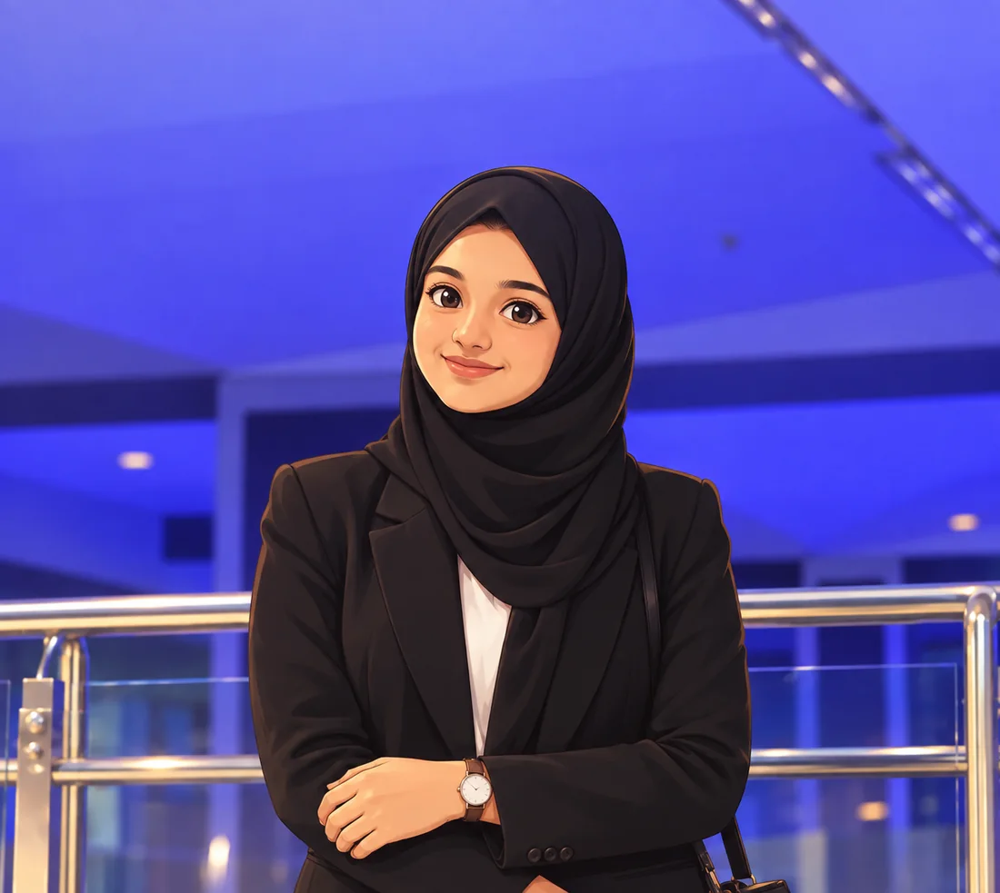

01 / 05AI • RAG
VISION
SENSOR
CONTEXT
RAG
Multi-Modal Graph RAG
for Driver Safety
Visual + sensor + contextual intelligence for driver safety analysis and risk detection.
PythonGraph RAGLLMsPyTorch
AI / ML • GENAI • COMPUTER VISION
I build intelligent systems, experiment with GenAI, and turn curious ideas into working projects.

A little info on me.
A Computer Science & Engineering with AI & ML student specializing in AI & ML, with hands-on work across GenAI, NLP, computer vision, data and software systems.
B.E. CSE (AI & ML)
MS Ramaiah Institute of Technology
CGPA 8.36 · till 6th semester
Click a project for the story.
Visual + sensor + contextual intelligence for driver safety analysis and risk detection.
Dynamic question generation, evaluation and performance tracking with LLM-based workflows.
Real-time recommendations using decision trees, weather and user preferences.
Interactive NLP dashboard for language detection, sentiment, readability and bias.
Real-time surveillance analysis for helmet violations and triple-riding detection.
A tiny portfolio of mine
Welcome to Aaliya's mini AI lab.
Ask about projects, skills, journey or type help.
The path so far.
Dayananda Sagar Institute of Technology · 82.43%
ICICI Bank project · database management, technical support, asset management and support-process optimization.
MS Ramaiah Institute of Technology · CGPA 8.36, current till 6th semester.
Research & academia.
A research publication on a hybrid intelligence learning architecture for pulmonary hypertension diagnosis.
Tools I work with.
Java · Python · C · SQL
Machine Learning · Deep Learning · CNN · RNN · LSTM · Transformers · Explainable AI
RAG · LLMs · Prompt Engineering · Vector Search · OpenAI API
PyTorch · TensorFlow · Keras · Scikit-learn · NumPy · Pandas · Matplotlib · Flask
Data Preprocessing · Feature Engineering · Time-Series Analysis · Model Evaluation · ETL · MySQL
Git · GitHub · GitHub Actions · CI/CD · Vercel · Render · Snowflake · Databricks · Activepieces
Data Structures & Algorithms · Operating Systems · Databases
TCP/IP · Subnetting · Network Security · Vulnerability Analysis · Power BI · Tableau · MS Office
Learning, certified.
Hobbies.
09 / LET'S CONNECT